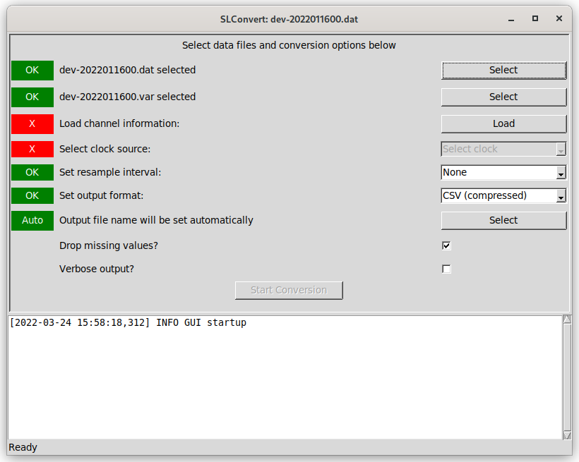
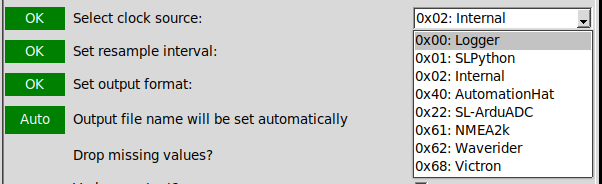
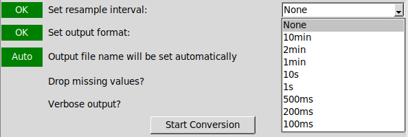
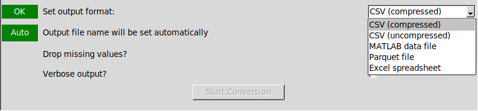

- Generated by
 1.9.1
1.9.1
|
SELKIELogger
0.9.18
|
This provides a more friendly interface to SLConvert, but with the same features. Data processing still takes place as described in the relevant section of the SLConvert reference page.

The top panel of the interface presents a number of steps intended to be followed from top down, with the status of each step given in the left hand column. This status will generally be an "X" on a red background for steps that still need to be completed or have invalid values and the text "OK" on a green background for completed and valid stages (a small number of exceptions are described below). The lower pane shows information and error messages that may be generated as the files are processed.
The first step in the process is to select main data file, using the first "Select" button. Once a data file has been selected the status in the left hand column will change to "OK" on a green background - note that this only reflects the selection of a valid file name and no checks are carried out on the file itself at this point.
If a channel mapping file exists with a name matching the data file, it will be selected automatically. This will be reflected by the status marker changing to show "OK". If no channel mapping file is found automatically (or an alternative is to be provided to rename output columns), the second "Select" button can be used to select the file manually.
If the selected data file is changed, the selected channel mapping file will also be updated. If no new file can be identified automatically, a "Check" warning will be displayed.
If no channel mapping file is available, manually select the main data file again for this step. This will lead to longer processing times for the next step as the whole data file will be read to identify the available data sources.
Once the correct data and channel mapping files have been selected, click "Load" to read information about the available data sources in this file. If no channel mapping file was available, this may take a few minutes as described above.
Once data source information has been loaded, the default (software) clock source will be selected if it is present. If it is necessary to use a different reference clock then one can be selected here. Each source is identified by ID number and the name given in the channel mapping file.

The default option ("None" selected here) will output one row / record for each timestamp emitted by the clock source selected in Step 4. Selecting an interval here will instead output a single record for each interval containing the average value of each channel.
The average value is a simple mean over any valid values (discarding blanks and invalid values represented as NaN), and no allowance is made for the quantity represented by each value (e.g. angular values).
This option is useful to align values at higher input rates to a common rate, with most output values only representing a single input sample.
Custom values may be typed as a value and unit suffix, using the frequency strings described in the Pandas DateOffset documentation. See the SLConvert page for more details.

Select a supported output format from the list. Compressed CSV files are output as a GZip compressed file, with a default extension of ".csv.gz"

A default file name will be generated once the main data file has been loaded and a valid resample interval and output format selected. The default file name will be the same as the main data file, with the extension replaced according to the selected output format (e.g. foo.dat would be output as in uncompressed CSV to foo.csv or as an Excel sheet to foo.xlsx).
If a resampling interval other than "None" is selected, this is appended to the file name before the extension (e.g. foo-1s.csv for a one second average CSV file).
The automatically chosen name and path can be overridden using select button (once enabled), and the status will change from "Auto" to "OK". Further changes to the input data file, format or resampling interval will not update a manually selected output file name.
Automatic file naming can be re-enabled by pressing "Select" again and answering "Yes" at the subsequent prompt. Answering "No" will re-open the file browser to allow an alternative name to be selected manually.
There are two checkboxes available to enable verbose output from the data conversion process (off by default) and to enable any empty records to be dropped during processing (on by default). Empty records take up additional storage space, but ensure that every record in the file represents an equal period of time. Dropping these records during processing saves disk space, but may complicate further analysis if not taken into consideration.
The "Start Conversion" button will only be enabled once sufficient information has been provided to allow the conversion process to be run. The button will be disabled while conversion takes place and re-enabled on completion. Information from the conversion process will be output to the log pane - this includes confirmation of files being used and any information or error messages saved to the data file by the data logging software.
Once conversion has been completed, this program can be closed without requiring any further actions.